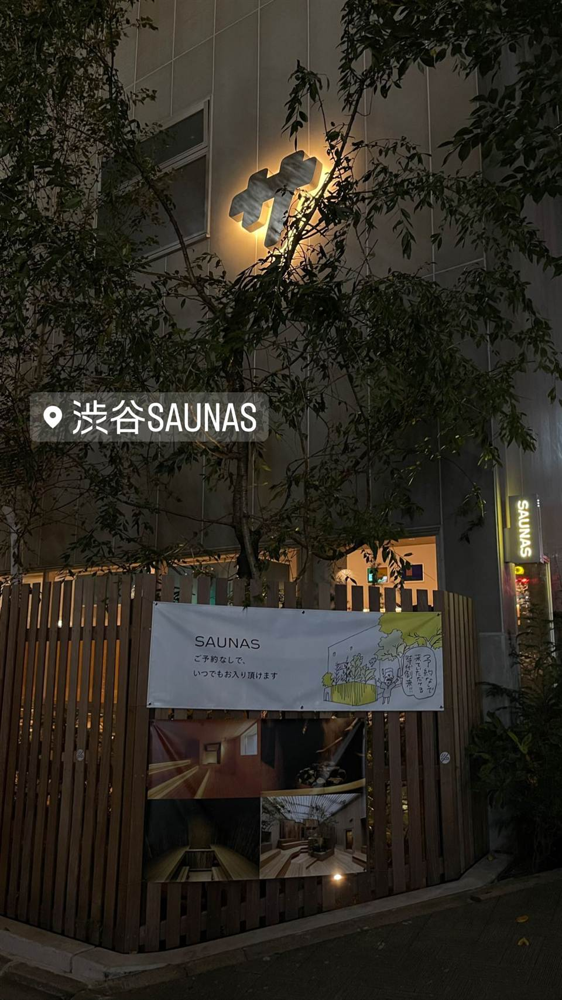

Sauna-Tokyo（サウナ東京）赤坂
男性専用、2023年4月オープンの大型サウナ専門施設、館内私語禁止の静音ルール
2023年に赤坂にオープンした男性専用のサウナ専門施設「サウナ東京」。40人以上収容できる関東最大級のメインサ室をはじめ5種類のサウナと3種の水風呂を備え、館内私語禁止という独自ルールで“ととのい”に集中できます。
TRIVIA
豆知識
- 2023年4月開業、関東最大級規模のサウナ施設をうたう
- メインのサウナ室は40人以上収容でき東京最大級
- 館内は私語禁止という独自ルールがある
| 種類 | サウナ専門施設 |
|---|---|
| サウナ | 5種類のサウナ室（蒸気乱舞＝40人収容の関東最大級メインサ室、手酌蒸気＝ケロ材使用、瞑想＝低温高湿のボナサウナ、昭和遠赤、戸棚蒸し風呂）、DMX制御の音響・照明とオートロウリュ |
| 水風呂 | 水風呂は温度別に3種類、15℃前後でウバメガシの土佐備長炭を使用 |
| 料金 | 平日1時間1,900円〜12時間4,700円、土日祝1時間2,400円〜12時間5,200円 |
| 営業時間 | 24時間営業（1階浴室・2階サウナは清掃のため7:45〜9:00休止） |
| 場所 | 赤坂駅・赤坂見附駅 東京都港区赤坂3-13-4 |
| 注意 | サウナ外観 |
NEARBY
近い施設・同じ種類
- 写真なし サウナ専門施設 静岡駅（バス利用） サウナ しきじ 館内すべてに駿河湾水系の天然湧水を使用、水風呂の水は蛇口から直接飲んだり持ち帰ったりできる サウナ 110℃ 水風呂 20℃ 平日1
- 写真なし サウナ専門 赤坂駅（徒歩1分）、赤坂見附駅（徒歩5分）、溜池山王駅（徒歩7分） Sauna-Tokyo（サウナ東京）赤坂 複数のテーマの異なるサウナ室と3種の水風呂を備えた大型サウナ施設。60人以上座れる休憩スペースあり 水風呂 15℃ 平日1時間1
- 写真なし サウナ専門 赤坂見附駅・赤坂駅 サウナリゾートオリエンタル赤坂 センチュリオンホテル・グランド・赤坂2階に併設された男性専用サウナ&SPA、異国情緒あるオリエンタル調の内装 水風呂 13℃
-

サウナ専門施設 渋谷駅 渋谷SAUNAS サウナ漫画『サ道』の著者タナカカツキ氏が総合プロデュース 平日3 - 写真なし サウナ専門施設 飯田橋駅／神楽坂駅 あかざる 神楽坂SAUNA 元料亭をリノベーションした檜造りのサウナ。1F個室貸切サウナと2F男性専用パブリックサウナの2フロア構成 サウナ 40℃ 水風呂 15℃ 利用時間により1
-
 サウナ専門施設 大井町駅（徒歩1分）
泊まれるサウナ屋さん 品川サウナ
屋上に外気浴スペース・露天風呂・坪湯を備える。カプセルホテル形式の宿泊も可能。2024年6月オープン
水風呂 20℃
980円（日帰り入館）
サウナ専門施設 大井町駅（徒歩1分）
泊まれるサウナ屋さん 品川サウナ
屋上に外気浴スペース・露天風呂・坪湯を備える。カプセルホテル形式の宿泊も可能。2024年6月オープン
水風呂 20℃
980円（日帰り入館）